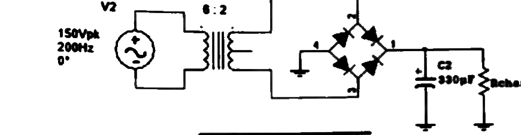

✅ Théorie — série d'exercices corrigés
Série d'exercices (A→H) résolus pas à pas avec la méthode. Quelques valeurs (signalées) restent à confirmer.
Question A /4 pts
Si VLED = 2 V, déterminer le courant qui traverse la LED, puis la tension aux bornes de R16 et les courants dans R15 et R16.
Étape 1 — Résistance équivalente du bloc parallèle (R14 ∥ R15 ∥ R16)
Étape 2 — Courant de la boucle = courant LED
Étape 3 — Tension aux bornes de R16 (= tension du bloc parallèle)
Étape 4 — Courants dans R15 et R16 (même tension de 4,33 V)
| Grandeur | Valeur |
|---|---|
| $I_{LED}$ | 8,60 mA |
| $U_{R16}$ | 4,33 V |
| $I_{R15}$ | 0,216 mA (≈ 216 µA) |
| $I_{R16}$ | 8,17 mA |
Question B /4 pts
Pour quelles valeurs minimale et maximale de la tension d'entrée le régulateur Zéner fonctionne-t-il correctement ? On donne IZmin = 10 mA, IZmax = 70 mA, VZ = 4,7 V.
Étape 1 — Courant de charge (constant)
Étape 2 — Tension d'entrée minimale (Z au seuil bas)
À $V_{in,min}$ : $I_Z=I_{Zmin}=10$ mA donc $I_R=I_{ch}+I_{Zmin}$, et $V_{in}=V_Z+I_R\,R_s$.
Étape 3 — Tension d'entrée maximale (Z au seuil haut)
| Grandeur | Valeur |
|---|---|
| $V_{S\,min}$ (entrée min.) | ≈ 14,4 V |
| $V_{S\,max}$ (entrée max.) | ≈ 55,2 V |
Question C /10 pts
Calculs — insérer les résultats finaux dans le tableau (1 pt/question). Commence p. 2 (C.1, C.2) et continue p. 3 (C.3 → C.10).
- C.1 — Quelle valeur de résistance mettre en série avec une LED ($V_{LED}=2{,}1$ V) pour limiter le courant à 15 mA si l'alimentation est de 10 V ?
$R=\dfrac{V_{source}-V_{LED}}{I_{LED}}=\dfrac{10-2{,}1}{0{,}015}=\dfrac{7{,}9}{0{,}015}=$ 527 Ω (≈ 530 Ω commercial) - C.2 — Un pont redresseur filtré a une ondulation de 100 mV crête à crête et une valeur moyenne de 20 V. Quel est le taux d'ondulation en % ?
$r=\dfrac{V_{ond}}{V_{moy}}=\dfrac{0{,}1}{20}=0{,}005=$ 0,5 % - C.3 — Quelle est la valeur efficace d'un signal sinusoïdal dont la valeur crête à crête vaut 20 V ?
$V_{crête}=\dfrac{V_{pp}}{2}=10$ V, puis $V_{eff}=\dfrac{V_{crête}}{\sqrt2}=\dfrac{10}{\sqrt2}=$ 7,07 V - C.4 — Quel est le courant de collecteur d'un transistor si $I_B=50\,\mu$A et $\beta_{CC}=150$ ?
$I_C=\beta_{CC}\times I_B=150\times50\,\mu\text{A}=$ 7,5 mA - C.5 — Si le courant d'émetteur vaut $I_E=5$ mA et le courant de base $I_B=50\,\mu$A, quel est le courant de collecteur ?
$I_C=I_E-I_B=5-0{,}05=$ 4,95 mA - C.6 — Un fil de cuivre de longueur $L=30$ m, de section $S=0{,}05$ mm² et de résistivité $\rho=17\times10^{-9}$ Ω·m. Calculer sa résistance.
$R=\rho\,\dfrac{L}{S}=\dfrac{17\times10^{-9}\times30}{0{,}05\times10^{-6}}=$ 10,2 Ω (0,05 mm² = 0,05×10⁻⁶ m²) - C.7 — Quelle est la puissance (en watts) quand une énergie de 750 J est consommée en 3 heures ?
$P=\dfrac{W}{t}=\dfrac{750}{3\times3600}=$ 69,4 mW ($t$ en secondes : 3 h = 10 800 s) - C.8 — Quelle est la puissance dissipée dans une résistance de 5,5 kΩ parcourue par un courant de 20 mA ?
$P=R\,I^2=5500\times(0{,}02)^2=$ 2,2 W - C.9 — Un serveur consomme 500 W. Coût d'une journée d'utilisation continue, sachant que le kWh coûte 10 centimes ?
$E=\dfrac{P\times t}{1000}=\dfrac{500\times24}{1000}=12$ kWh, puis coût $=12\times0{,}10=$ 1,20 € - C.10 — Déterminer la fréquence d'une onde sinusoïdale $v(t)=20\sin(200\pi t)$.
On identifie $\omega=200\pi$, et $f=\dfrac{\omega}{2\pi}=\dfrac{200\pi}{2\pi}=$ 100 Hz
| 1 | 2 | 3 | 4 | 5 | 6 | 7 | 8 | 9 | 10 |
|---|---|---|---|---|---|---|---|---|---|
| 527Ω | 0,5% | 7,07V | 7,5mA | 4,95mA | 10,2Ω | 69,4mW | 2,2W | 1,20€ | 100Hz |
Question D /5 pts
QCM conceptuel (0,5 pt/question). Commence p. 3 (D.1, D.2) et continue p. 4 (D.3 → D.10). Réponses en vert + justification.
- D.1 — Le Hertz est l'unité de… → c) Fréquence
- D.2 — Le noyau d'un atome est constitué de… → c) neutrons et protons
- D.3 — Matériau semi-conducteur le plus utilisé → d) le silicium
- D.4 — Bande où existent les électrons libres → c) bande de conduction
- D.5 — Polarisation directe d'une jonction PN → d) réponses a) et c) (+ sur l'anode/région P, − sur la cathode/région N)
- D.6 — Onde de valeur crête 10 V → crête à crête → b) 20 V ($V_{pp}=2V_{crête}$)
- D.7 — Entrée 60 Hz sur redresseur double alternance → fréquence de sortie → a) 120 Hz ($2f$)
- D.8 — Si $R_{charge}$ d'un redresseur double alternance filtré est réduite, l'ondulation → a) augmente
- D.9 — Fonction de la jonction PN dans une LED → b) recombiner électrons et trous pour émettre de la lumière
- D.10 — Utilité du circuit 7805 → c) maintenir une tension constante de +5 V
| 1 | 2 | 3 | 4 | 5 | 6 | 7 | 8 | 9 | 10 |
|---|---|---|---|---|---|---|---|---|---|
| c | c | d | c | d | b | a | a | b | c |
Question E /5 pts
Pont redresseur double alternance filtré. Source V2 = 150 Vpk, 200 Hz ; transformateur 6:2 ; C = 330 µF ; Rcharge = 470 Ω. Déterminer : tension efficace secondaire, crête de sortie, TIC des diodes, ondulation, valeur moyenne. Peut-on ajouter un 7824 ?

Étape 1 — Tension au secondaire du transformateur (rapport 6:2 = abaisseur ×⅓)
Où ? juste après le transfo, avant le pont. Le transformateur abaisse la tension. On calcule ce qui arrive au secondaire : la crête (le sommet de la sinusoïde) et l'efficace (ce que lirait un multimètre en AC).
Étape 2 — Tension de crête en sortie (pont = −1,4 V)
Où ? juste après le pont. Comme 2 diodes conduisent en même temps, on perd $2\times0{,}7=1{,}4$ V. C'est la tension max jusqu'à laquelle le condensateur se charge.
Étape 3 — Tension inverse de crête des diodes (TIC / PIV)
C'est quoi ? la tension maximale qu'une diode doit supporter quand elle est bloquée (en inverse). Sert à choisir des diodes assez robustes pour ne pas claquer.
Étape 4 — Ondulation ($f_{out}=2\times200=400$ Hz)
C'est quoi ? entre deux sommets, le condensateur se décharge un peu dans la charge → la tension « tremblote ». L'ondulation = la hauteur de ce tremblotement. $f=2\times200$ Hz car en double alternance le condo est rechargé 2 fois par période.
Étape 5 — Valeur moyenne (filtrée)
C'est quoi ? le niveau continu moyen en sortie, au milieu du tremblotement — la « vraie » tension DC que voit la charge.
Étape 6 — Peut-on ajouter un régulateur 7824 ?
Ce qu'on fait : on vérifie que la tension continue disponible (≈ 48,2 V) tombe bien dans la plage d'entrée admissible du régulateur (donnée dans la table).
| Régulateur | Plage d'entrée (V) |
|---|---|
| LM7805 | 7 → 20 |
| LM7812 | 14,5 → 27 |
| LM7815 | 17,5 → 30 |
| LM7818 | 20,5 → 33 |
| LM7824 | 26,5 → 39 |
👉 Il faudrait d'abord abaisser la tension (transfo avec un rapport plus grand, ex. ramener Vcrête,sec sous ≈ 39 V, ou ajouter un pré-régulateur).
| Grandeur | Valeur |
|---|---|
| $V_{eff}$ secondaire | 35,4 V |
| $V_{crête}$ de sortie | 48,6 V |
| TIC (diodes) | ≈ 49,3 V |
| $V_{ondulation}$ | 0,78 V |
| $V_{moyen}$ | ≈ 48,2 V |
| Régulateur 7824 ? | NON — 48,2 V > 39 V (max dépassé) |
Question F /4 pts
Déterminer la résistance équivalente, puis la chute de tension aux bornes de chaque résistance. V1 = 20 V, V7 = 5 V, R4 = 100 Ω ∥ R1 = 220 Ω, R5 = 330 Ω ∥ R3 = 220 Ω, R2 = 330 Ω.
Étape 1 — Résistance équivalente
Étape 2 — Courant de la boucle (FEM nette)
Étape 3 — Chutes de tension (loi d'Ohm, même courant partout)
| Grandeur | Valeur |
|---|---|
| $R_{éq}$ | 530,75 Ω |
| $U_{R1}$ (= $U_{R4}$) | 3,24 V |
| $U_{R2}$ | 15,54 V |
| $U_{R3}$ (= $U_{R5}$) | 6,22 V |
| $U_{R4}$ | 3,24 V |
| $U_{R5}$ | 6,22 V |
Question G /5 pts
Dessiner la droite de charge. Déterminer IC, VB, VC, VCE. Le transistor est-il en saturation ? VCC=15 V, R6=22 kΩ et R20=5,3 kΩ (pont de base), RC=2,2 kΩ, RE=470 Ω.
Étape 1 — Tension de base (pont diviseur)
On calcule : la tension $V_B$ que le pont R6/R20 impose sur la base — c'est elle qui « commande » tout le transistor.
Étape 2 — Émetteur et courant de collecteur
On calcule : $V_E$ (= $V_B-0{,}7$, la jonction base-émetteur), puis le courant du transistor : Re transforme $V_E$ en courant $I_E\approx I_C$.
Étape 3 — Tensions collecteur et VCE
On calcule : la tension du collecteur $V_C$ (après la chute dans Rc), puis $V_{CE}$ = la tension aux bornes du transistor lui-même (collecteur − émetteur).
Étape 4 — Droite de charge & saturation
On calcule : le courant maximum possible ($I_{Csat}$) pour tracer la droite de charge, puis on compare $I_C$ réel à ce max pour savoir si le transistor est saturé ou en région active.
| Grandeur | Valeur |
|---|---|
| $V_B$ | 2,91 V |
| $I_C$ | 4,71 mA |
| $V_{CE}$ | 2,43 V |
| $V_C$ | 4,64 V |
| Saturation | NON (région active) |
Question H /3 pts
Si VCEsat = 0 V et βCC = 120, quel est le courant de saturation du montage ? Quelle valeur de R1 permet d'atteindre la saturation si VBB = 5 V ? (VCC=10 V, R2 = RC = 220 Ω.)
Étape 1 — Courant de saturation du collecteur
Étape 2 — Courant de base minimal pour saturer
Étape 3 — Résistance de base R1
| Grandeur | Valeur |
|---|---|
| $I_{Csat}$ | 45,45 mA |
| $R_1$ | ≈ 11,35 kΩ |
📋 Récapitulatif de tous les résultats
| Q | Résultats |
|---|---|
| A | $I_{LED}=8{,}60$ mA · $U_{R16}=4{,}33$ V · $I_{R15}=0{,}216$ mA · $I_{R16}=8{,}17$ mA |
| B | $V_{in,min}\approx14{,}4$ V · $V_{in,max}\approx55{,}2$ V |
| C (calculs) | 527Ω · 0,5% · 7,07V · 7,5mA · 4,95mA · 10,2Ω · 69,4mW · 2,2W · 1,20€ · 100Hz |
| D (QCM) | c · c · d · c · d · b · a · a · b · c |
| E | $V_{eff}=35{,}4$V · $V_{c,out}=48{,}6$V · TIC≈49,3V · $V_{ond}=0{,}78$V · $V_{moy}=48{,}2$V · 7824 NON (48>39V) |
| F | $R_{éq}=530{,}75\,\Omega$ · $U_{R1}=U_{R4}=3{,}24$V · $U_{R5}=U_{R3}=6{,}22$V · $U_{R2}=15{,}54$V |
| G | $V_B=2{,}91$V · $I_C=4{,}71$mA · $V_{CE}=2{,}43$V · $V_C=4{,}64$V · non saturé |
| H | $I_{Csat}=45{,}45$ mA · $R_1\approx11{,}35$ kΩ |